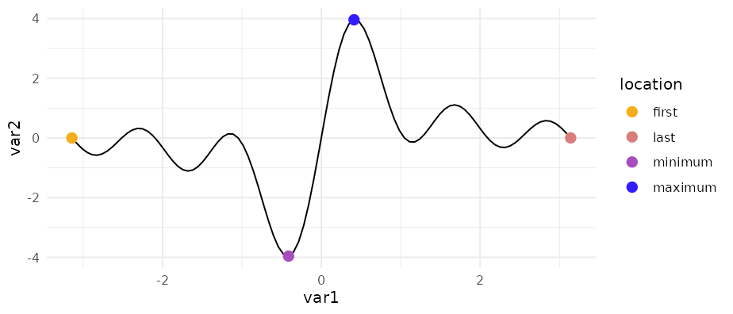

Add a minimal accent to your plots. ggpointless is an extension of the ggplot2 library making it easy to add a simple point layer to highlight first, last, minima or maxima observations with the goal to provide some additional context. Or just some visual sugar.
Installation
You can install the development version of ggpointless from GitHub with:
# install.packages("devtools")
devtools::install_github("flrd/ggpointless")Usage
There are two functions in this small package: geom_pointless(), which is powered by stat_pointless(). geom_pointless() behaves like geom_point() does with the addition of a location argument. You can set it to "first", "last" (default), "minimum", "maximum", and "all", where "all" is just shorthand to select "first", "last", "minimum" and "maximum".
See the vignette("ggpointless") for more details.
x <- seq(-pi, pi, length.out = 100)
y <- outer(x, 1:5, function(x, y) sin(x*y))
df1 <- data.frame(
var1 = x,
var2 = rowSums(y)
)
ggplot(df1, aes(x = var1, y = var2)) +
geom_line() +
geom_pointless(aes(color = after_stat(location)),
location = "all",
size = 3) +
scale_color_manual(values = c('#f4ae1b', '#d77e7b', '#a84dbd', '#311dfc')) +
theme_minimal()
Data
The ggpointless package contains two data sets:
-
co2_ml: CO2 records taken at Mauna Loa, Hawaii -
covid_vac: COVID-19 Cases and Deaths by Vaccination Status
See the vignette("examples") for possible use cases.
Code of Conduct
Please note that this project is released with a Contributor Code of Conduct. By participating in this project you agree to abide by its terms.